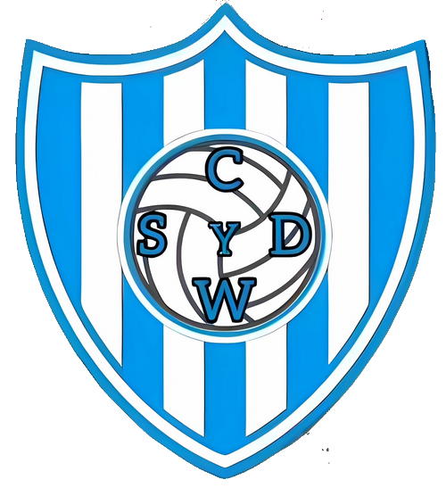
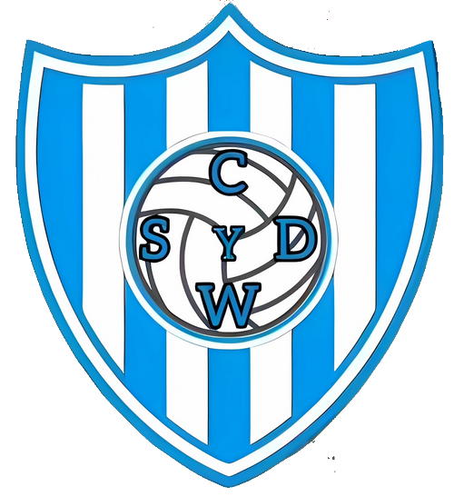

Club Social y Deportivo Winifreda
Un encuentro lleno de aprendizaje y emoción para los jóvenes futbolistas de Winifreda.
El club ha confirmado su participación en el Torneo Provincial 2025 con el fixture oficial.
Destacada actuación del joven Santino Pieraligi en el amistoso contra Lanús.
Oportunidad para jóvenes futbolistas de ser evaluados por Argentinos Juniors.
Celebración del aniversario del club con una cena y baile con la banda Manantial.
El club se prepara para su séptima participación en el Torneo Provincial.
Enfoque en el desarrollo mental de los jóvenes deportistas del club.
Iniciativa de los padres para equipar a los jóvenes jugadores con ropa de viaje.

Independiente Gral. Pico vs Winifreda
Domingo 7/9 - 16:00 hs
Deportivo Anguilense vs Winifreda
Sábado 13/9 - 13 y 15 hs
 
Sportivo Toay vs Winifreda
Jueves 4/9 - 22:00 hs
Mar 2024 vs Winifreda
Viernes 5/9 - 21:30 hs

La Maruja vs Winifreda
Domingo 7/9 - 15:30 hs